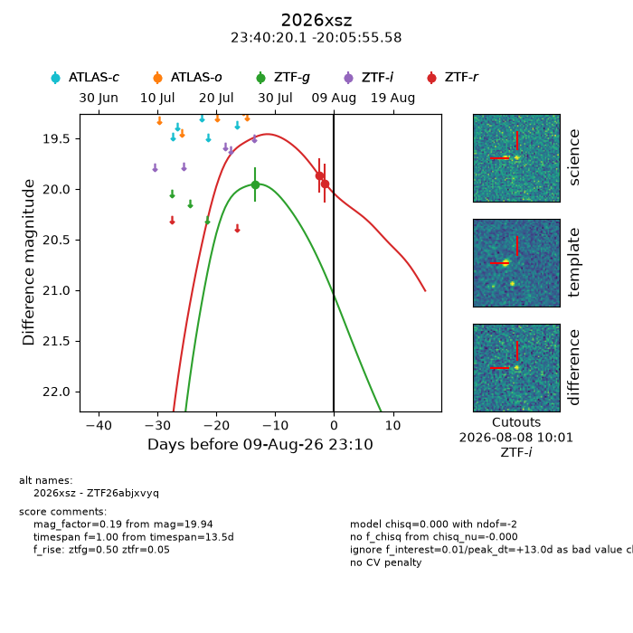
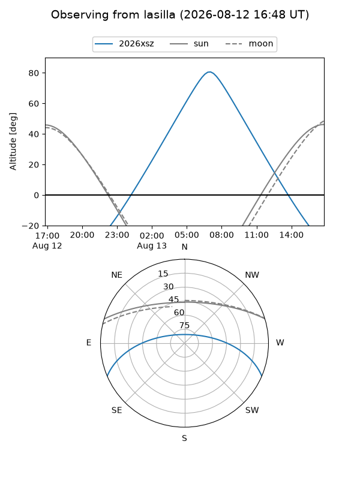
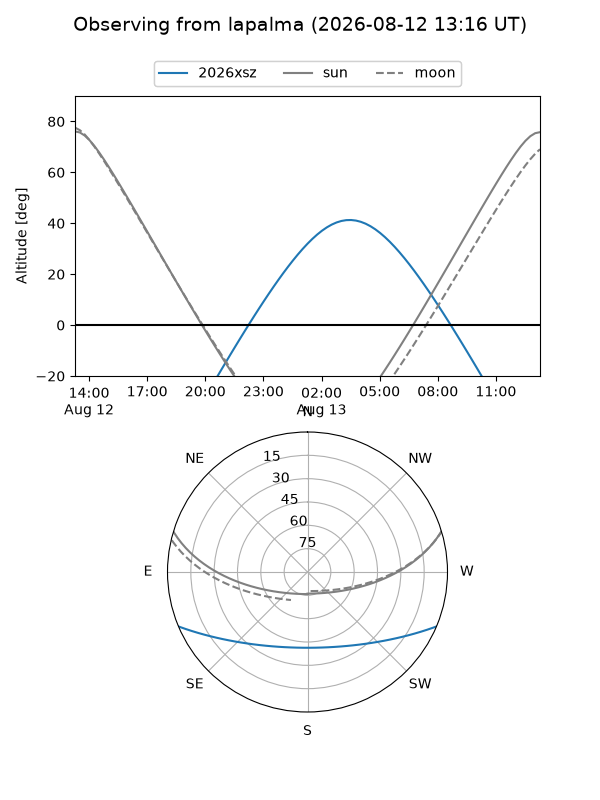
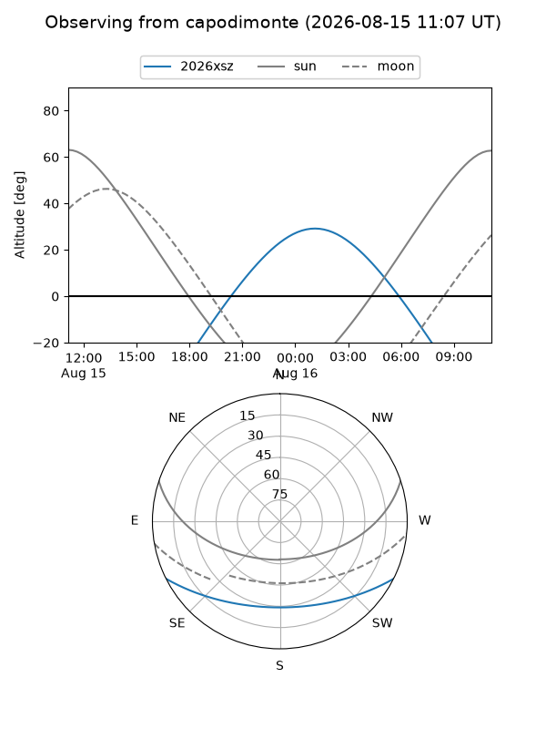
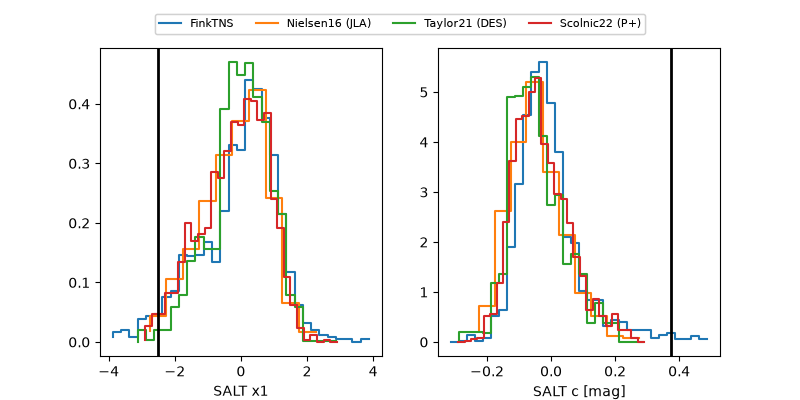

2026xsz
Target 2026xsz at 2026-08-09 23:13
Aliases and brokers:
FINK-ZTF: ztf.fink-portal.org/ZTF26abjxvyq
Lasair-ZTF: lasair-ztf.lsst.ac.uk/objects/ZTF26abjxvyq
ALeRCE-ZTF: alerce.online/object/ZTF26abjxvyq
YSE-PZ: ziggy.ucolick.org/yse/transient_detail/2026xsz
TNS name: wis-tns.org/object/2026xsz
Direct TNS query: direct search
alt names
ZTF26abjxvyq (ztf,fink_ztf)
2026xsz (tns,yse)
Coordinates:
equatorial (ra, dec) = 355.0836,-20.09877
equatorial (HMS+DMS) = 23:40:20.06,-20:05:55.58
galactic (l, b) = (52.5046,-72.28483)
Flags:
TNS type: nan
peak dt: +13.0
Photometry:
last ztfg=19.95, ztfr=19.94
1 ztfg, 2 ztfr detections
Lightcurve

Visibility



Additional plots
